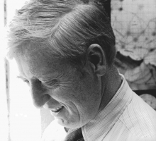

Please note: the AAS Obituaries are temporarily being hosted on this website while their full content is being ingested into the PubPub publishing platform newly adopted by the Bulletin of the American Astronomical Society. When the migration is complete, your existing links will take you to the final, migrated content. Contact peter.williams@aas.org with any questions.
Samuel J. Goldstein (1925-2000)
Samuel J. Goldstein, Associate Professor Emeritus of astronomy at the University of Virginia, died 13 June 2000, after battling a brain tumor for several months. He is survived by his wife, Carol, and four daughters. Always a Hoosier, he was born 23 June 1925 in Indianapolis, and received his BS in 1948 from Purdue and PhD in 1958 from Stanford, both in Electrical Engineering.
Sam's strong background in engineering, when coupled with his great intellectual curiosity, led him to make observations that were on the cutting edge. As his Stanford dissertation project, Sam worked at the Harvard Radio Astronomy Station at Fort Davis, Texas, which had been established by Alan Maxwell for observations of the sun during the International Geophysical Year. Building on his thesis research, Sam developed an interferometer for measuring the sizes and motions of solar bursts in the frequency range 105-140 MHz. The use of such a broad bandwidth restricted the angular range of the fringe envelope, allowing the central fringe to be identified more easily. Sam's instrument was one of the first radio applications of this technique.
After his arrival at the Harvard College Observatory he joined the program of Cooper and Jelley which developed a low temperature maser for use in the observation of the 21-cm line of neutral hydrogen. Sam then used the maser to make a pioneering measurement of the emission from intergalactic hydrogen.
Sam moved to the University of Virginia in 1965. He continued his radio astronomy research, mostly using the facilities of the National Radio Astronomy Observatory in Green Bank, West Virginia. At Green Bank, he made innovative use of radio interferometry to extend the analysis of radio source counts to low flux levels. His interests broadened to include the history of astronomy—the work of Ole Roemer and Ptolemy, in particular-celestial mechanics, and magnetic fields. He collaborated with his brother Richard on several papers involving asteroids, and on a study of space debris in near earth orbits.
One could not help but be impressed by Sam's unbridled enthusiasm for his work. This continued until near the very end with Sam's dictating a final paper on the resonant orbit of the asteroid Vesta to his daughter Anne-Marie. We think of him often and miss his presence.
Photo courtesy of Robert T. Rood
Obituary written by: Robert T. Rood (University of Virginia), David E. Hogg (National Radio Astronomy Observatory)
BAAS Citation: BAAS, 2000, 32, 1667
SAO/NASA ADS Bibcode: 2000BAAS...32.1667R